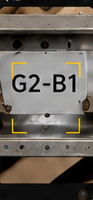
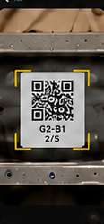
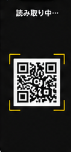
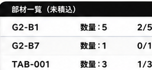

1
カメラを向ける

合番が書かれた部材にカメラを向けます。
カメラで合番や部材QRを読み取り、出荷リストの部材と照合します。
うまく読めないときは、別の方法に切り替えられます。

合番が書かれた部材にカメラを向けます。
文字を読み取ります。少し動かすと読みやすくなります。
候補を選んでください。
出荷リストと照合し、一致度の高い順に候補を表示します。
内容を確認し『確認して積込済にする』をタップします。
積込状況は『一覧から選ぶ』で確認できます。

部材に貼られたQRコードにカメラを向けます。

QRコードを読み取ります。
内容を確認し『確認して積込済にする』をタップします。
積込状況は『一覧から選ぶ』で確認できます。
どの方法でも
うまくいかないとき
を活用してください。

部材一覧から対象の合番をタップして、積込できます。